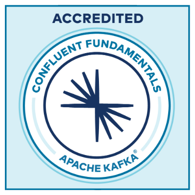

I hold a variety of certifications for example within both SAFe and Scrum. I have worked with these agile frameworks on many occasions during my career. I strive to learn and improve my understanding and I do that through certifications and courses.
Professional Experience
Financial Institutions of NBS
Netcompany Banking Services
Lead architect on a large-scale initiative to implement a new investment solution for Danish financial institutions within Netcompany Banking Services. The solution supports core investment processes and must integrate with existing banking platforms and surrounding ecosystems.
Technologies: Springboot, Java, Docker, React, IBM MQ, Postgres, Gradle, Azure, z/OS.
Financial Institutions of NBS
Netcompany Banking Services
Technical architect on a transformation and assessment project following Netcompany’s acquisition of Netcompany Banking Services. The focus was to establish a clear understanding of the inherited IT landscape and define strategies for future consolidation, modernization and decommissioning.
Danske Bank
Netcompany
Lead architect on a joint analysis project with Danske Bank focusing on defining requirements and solution design for a new Modern Housing Advisory Tool (MHAT) supporting client advisory within real estate, mortgages, loans and other financial products.
The project was conducted in close collaboration with Danske Bank and Festina Finance to assess the functional and technical fit of the Festina Advisor product as a core advisory platform.
Mit.dk
Netcompany
Lead architect on Netcompany's private and public digital post client. During my time on the project I lead the delivery of, and co-developed, several solutions such as offering secure payments, collection and issuing of signatures as well as form-based collection of input via letters sent through the client. I also led technical engagements with several different customers such as P+, Pensionskassen for Akademikere, and external vendors such as Mastercard Aiia, MobilePay, Criipto etc.
Mit.dk
Netcompany
Architect and software developer on a new Caseworker Portal used by caseworkers and administrators for registering customers and maintaining loans to different energy suppliers offered by the Danish Goverment (DA: "Indefrysningsordning"). The portal was built as a SPA using the Nuxt.js framework built on top of Vue.js. Mirage.js was used for creating a sophisticated mock API against which the SPA was run.
New Administrative Access Portal used for maintaining digital post systems setup with Mit.dk for public and private clients. The portal used similar frameworks and techologies as above.
Technologies: Jest, Vue.js, git, MVC, SPA, Javascript, Typescript, HTML, RxJS, Bootstrap, Jenkins, Node.js, Kubernetes, Maven, Kafka, Gradle., Geb.
Mit.dk
Netcompany
Architect and software developer on the new Digital Mailbox System (Mit.dk) developed for private and public sector built on a Springboot microservice architecture utilizing Kafka as an event-driven communication platform. The view-clients for both web and app were built using React Native. Everything was run on Kubernetes.
I was the technical lead and lead developer in charge of designing and implementing various features. For example, payment integrations enabling users to pay invoices from senders via digital post through MobilePay and Mastecard Aiia.
Technologies: Springboot, Junit, Swagger, Docker, Java, JPA, React Native, Vue.js, SQL, git, MVC, Elasticsearch, Javascript, Typescript, HTML, RxJS, Bootstrap, Jenkins, Node.js, Spring (Boot, Data, Web, Security, Cloud), Hibernate, MSSQL, Kubernetes, Maven, Kafka, Gradle, CSS, SASS, PostgreSQL, OAuth 2.0, OpenID Connect.
Topdanmark
Netcompany
I was the team lead working on a new Core Policy System for one of Denmark's largest insurance companies built using the standard insurance product system known as Guidewire.
I lead a team responsible for delivering a new case management system integrating with DMR (the Danish Motor Registry) and providing automatic issuing of motor insurance policies based on the messages from DMR.
Guidewire, Gosu, Java, Javascript, Jenkins, AWS, Swagger, REST, SOAP, SoapUI.
SOS International
Netcompany
Consultant and software developer for a new Case Management System for a large Danish travel assistance and insurance company built from the buttom on a Springboot microservice architecture utilizing ActiveMQ as an event-driven communication platform. The user interface was built as an Angular Single Page Application. Everything was run on Openshift.
I contributed to the design and implementation of a new case management system, a policy/product system and customer/contract system for handling travel assistance cases and insurance policies.
Technologies: Springboot, Junit, Swagger, Docker, Java, JPA, Angular, SQL, SAFe, Scrum, git, MVC, Elasticsearch, Openshift, Javascript, Typescript, HTML, RxJS, Bootstrap, Jenkins, Node.js, Spring (Data, Web, Security), Liquibase, Hibernate, MSSQL, Kubernetes, Maven, ActiveMQ.
Center for Energy Resources Engineering
OPTION
Software developer whos job was to extend functionality of current optimization tools related to oil production optimization. The main task was to write an optimization module that makes it possible to substitute MATLABs FMINCON with state-of-the-art optimizers, IPOPT, KNITRO and NPSOL in combinaton with an Eclipse E300 reservoir simulator.
Technologies: MatLab, Octave, Shell, E300 Reservoir Simulator (Schlumberger), IPOPT, KNITRO, NPSOL.
DTU - Technical University of Denmark
DTU
Parallel to my study at DTU I was employed as a teaching assistant for the DTU course "Calculus 01" and "Linear Algebra 01" (course nr. 01901 and 01902 respectively). This requires a complete understanding of the subjects at hand as to help students understand the curriculum and correcting mandatory assignments.
Calculus and Algebra 1. Course http://kurser.dtu.dk/course/01901, Calculus and Algebra 2. Course http://kurser.dtu.dk/course/01920.
Competencies
Spring
Proficient
I have been developing with Spring since the beginning of my
career, and I have experience with a variety of the
different projects in the Spring ecosystem.
Angular
Proficient
I have worked with Angular, since the beginning of my career.
I have been developing SPA's in Angular using the composability,
reuseability and structure provided by the framework.
Typescript
Proficient
I have worked a lot with Typescript (and Javascript), and I
appreciate this language for the type safety and tooling it adds on top of Javascript.
Complete set of competencies
Javascript
Typescript
Java
Spring (Boot, Web, Cloud, Security, Data)
Node.js
Linux
z/OS
IBM MQ
React
Docker
Kubernetes
Bootstrap
Jenkins
Angular2+
Maven
Gradle
Kafka
RxJS
Vue.js
Firebase
Liquibase
Hibernate
Bash
CSS/SCSS
Git
C/C++
Python
MatLab
Certifications & Academic Experience
SAFe Agilist
SAFe 4
Scrum Master
PSM 1

Confluence Fundamentals Apache Kafka
Accredited
I hold a M.Sc degree in Mathematical Modelling and Computer Science from the Technical University of Denmark (DTU) with a specialization within Scientific Computing. Therefore, I also have a strong understanding of Numerical and Predictive Modelling, Machine Learning, Optimization and a theoretical understanding of Advanced Mathematics to support this. My background in mathematics has given me an strong analytical mindset and aptitude for problem solving, which I use everyday in my work.
University grades, curriculum and complete list of certifications can be forwarded.
A categorised list of publications that I have written is available below. All three papers have been published in international conference proceedings.
State and Input Estimation of Nonlinear Chromatographic Processes
Alexander Hørsholt
Spatial Discretization and Kalman Filtering for Ideal Packed-Bed Chromatography
Alexander Hørsholt
A DG-FE Method for Simulation of Packed Bed Chromatographic Processes
Alexander Hørsholt
Contact me
I'm a problem solver and a fast learner. I'm able to quickly get up-to-speed in complex systems and organizations in both new and long running projects. I offer critical thinking, attention to detail, consulting and software development expertise with my domains of proficiency. I have a passion working with in the financial services industry and I would like to leverage and further my knowledge within these domains.
I'm technically proficient with: Javascript/Typescript, Java, Spring, Node.js, Angular, Vue.js, Maven, Gradle, Kafka, RxJS, Liquibase, Hibernate, Git, Jenkins, Docker, Kubernetes, Bootstrap, Google Firebase, Html, SCSS/CSS, Linux.
If you need help within the areas of:
- Enterprise and business architecture.
- Backend development with Spring, Kafka, Java, Node.js or previously frameworks.
- Frontend development in Angular, Vue.js, React and other modern web frameworks.
- Platform configuration through Kubernetes and container configuration via Docker.
- Requirements elicitation, software and systems analysis.
- Technical consulting and problem solving.
or if you have an interesting oppourtunity, feel free to reach out to me via mail: alexander.hoersholt@gmail.com or phone: +45 23 662 306.